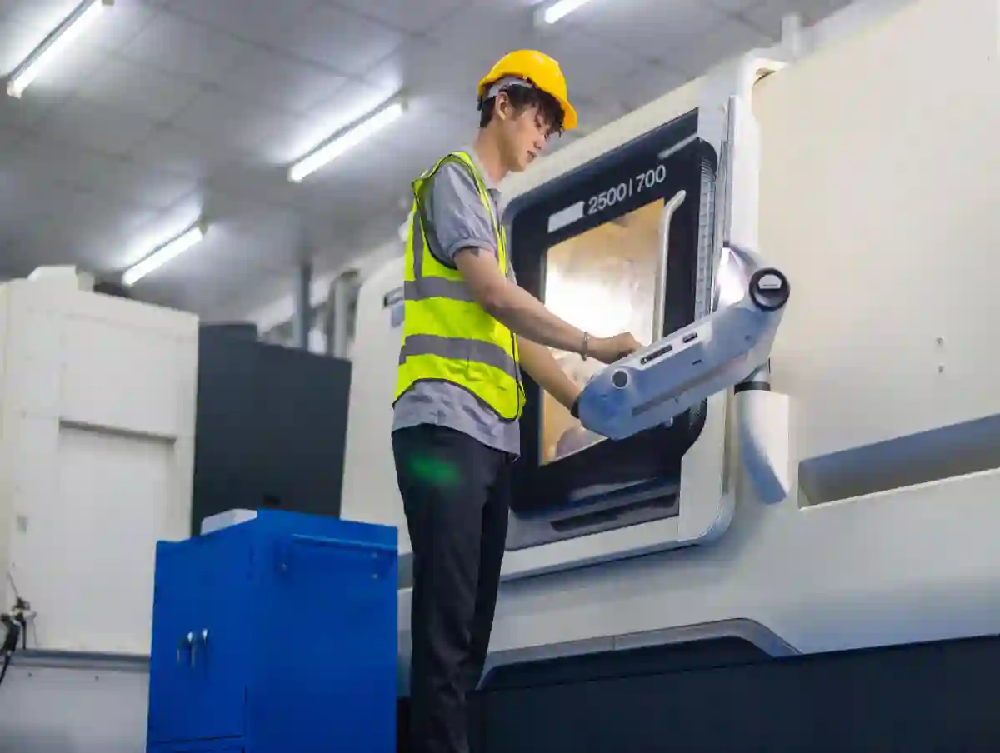

CNC İmalat Firması Seçimi: Doğru Tedarikçiyi Belirlemek İçin 10 Kritik Kriter
Bir parçayı çizimde doğru yapmak yetmez; onu tekrar edilebilir biçimde, istenen tolerans ve yüzeyle, hedef termin içinde üretecek tedarikçiyi bulmak gerekir. Bu yüzden cnc imalat firması seçimi yalnızca “fiyat karşılaştırması” değildir; kalite riski, termin riski ve iletişim riski aynı tabloda yönetilir. Özellikle özel parça, prototip, düşük adetli hassas işlerde “yanlış tedarikçi” seçimi; revizyon, hurda, yeniden bağlama ve lojistik tekrarlarıyla toplam maliyeti büyütür.
Satın alma tarafında sık görülen hata şudur: Teklifte en düşük birim fiyatı seçmek. Oysa CNC’de maliyetin önemli bölümü; bağlama yöntemi, takım seçimi, operasyon sırası, ölçüm yaklaşımı ve proses kontrol disiplininden gelir. Tedarikçinin bu disiplinleri yönetme becerisi yoksa, fiyat düşük görünür ama toplam maliyet yükselir. Bu rehberde cnc imalat firması seçimi için 10 kriteri, sahada uygulanabilir kontrol sorularıyla ele alacağız.
İlk adım, ihtiyacınızı doğru tanımlamaktır. Parça fonksiyonu nedir, kritik ölçüler hangileridir, hangi toleranslar gerçekten gerekli, yüzey pürüzlülüğü hedefi ne, ısıl işlem/kaplama var mı, malzeme sertliği ve lot izlenebilirliği isteniyor mu? Bu soruların net cevapları, cnc imalat firması nasıl seçilir sorusunun temelini oluşturur. Çünkü tedarikçi seçimi, “bu işi kim yapar”dan çok “bu işi kim sürdürülebilir şekilde yapar” sorusuna yanıt verir.
Bu içerikte, süreç boyunca Aymaksan’ın üretim pratiklerinde sık kullanılan kontrol mantığını baz alıyoruz:
- Kritik ölçüler için ölçüm yöntemi (kumpas/mikrometre/CMM) uyumu
- Makine parkı–parça geometrisi uyumu
- Proses kontrol ve ilk parça onayı (FAI) mantığı
- Revizyon yönetimi ve izlenebilirlik
Okurken ilgili sayfalara da geçiş yapmanız için iç linkleri doğal biçimde ekledim: Üst hub sayfa üzerinden bütün satın alma içerikleri daha düzenli ilerler. Örneğin CNC İmalat Satın Alma Rehberi gibi bir merkez sayfa, tedarikçi seçimi ile teklif/kalite süreçlerini aynı çatı altında toplar. Teklif okuma ve karşılaştırma için CNC Üretim Teklif Süreci ve bütçe planlama için CNC İmalat Fiyatları sayfaları, bu rehberin tamamlayıcısıdır.
Kriter 1 – Teknik Yeterlilik ve Parça Uygunluğu Net mi?
Bir tedarikçinin “CNC yapıyoruz” demesi, sizin parçanızı doğru yapacağı anlamına gelmez. güvenilir cnc üretici firma kriterleri içinde ilk sıraya “parça uygunluğu”nu koyun. Burada aradığınız şey; parçanın malzemesi, toleransı ve geometrisine uygun makine/operasyon kabiliyetidir. Örnek: İnce cidarlı alüminyum parça, yanlış bağlamada titreşimle yüzey bozar; paslanmazda yanlış takım kaplaması, çapak ve ölçü kaçarır.
Kontrol soruları (kısa):
- Bu parça için planlanan operasyon sırası nedir?
- Hangi bağlama yöntemi kullanılacak (mengene, özel fikstür, soft jaw)?
- Kritik ölçüler hangi operasyon sonunda güvence altına alınacak?
Bu noktada tedarikçinin “iş planı” gösterebilmesi, cnc fason imalat firması seçimi açısından güçlü sinyaldir.

Kriter 2 – Makine Parkı, İşinize Gerçekten Uygun mu?
Makine parkı sayfa üzerinde liste olarak etkileyici görünebilir; önemli olan sizin işinizle eşleşmesidir. cnc makine parkı değerlendirme kriterleri; X/Y/Z stroğu, tabla kapasitesi, iş mili gücü, devir aralığı, takım magazini ve özellikle tekrarlanabilirlik davranışıyla okunur. Büyük parçada strok ve tabla; hassas parçada rijitlik ve termal stabilite öne çıkar.
Aymaksan’ın yaklaşımı gibi, tedarikçinin makine parkını “parça ailesi” üzerinden konumlandırması gerekir. Bu yüzden Makine Parkı sayfası benzeri bir envanter yalnızca liste değil; hangi parçada hangi hattın kullanıldığına dair bir mantık içermelidir.
Pratik Eşleştirme Tablosu Mantığı
- Dik işleme (CNC freze): Cep, kanal, yüzey, delik paterni yoğun parçalar
- CNC torna: Eksenel simetrik, mil/burç, diş, kanal ağırlıklı parçalar
- İkincil operasyonlar: Kılavuz çekme, rayba, honlama, çapak alma
İlgili hizmet sayfalarıyla eşleştirme yapmanız, tedarikçiyle aynı dili konuşmanızı sağlar: CNC Tornalama Hizmetleri ve CNC Frezeleme / Dik İşleme.
Pratik Eşleştirme Tablosunu Karara Dönüştürme Rehberi
“Pratik Eşleştirme Tablosu Mantığı”nı sahada işe yarar hale getirmek için parçayı önce geometri + tolerans + malzeme üçlüsünde sınıflandırın. Ardından her sınıfı, uygun tezgâh ve kontrol yöntemiyle eşleyin. Örneğin eksenel simetrik mil/burç parçalar için torna ağırlıklı plan, prizmatik ve cep/kama kanalı yoğun parçalar için dik işleme ağırlıklı plan genellikle daha stabil sonuç verir. Bu eşleştirme, cnc imalat firması seçimi yaparken “tezgâh var mı?” sorusunu “tezgâh bu parçayı tekrar edilebilir üretir mi?” seviyesine taşır.
Tabloyu oluştururken üç satırı zorunlu ekleyin: (1) Kritik ölçülerin hangi operasyonda güvenceye alınacağı, (2) bağlama yöntemi (soft jaw, özel fikstür, referans yüzey), (3) ölçüm metodu (CMM/komparatör/mikrometre). Böylece cnc makine parkı değerlendirme kriterleri ile “gerçek proses” aynı tabloda görünür olur. Son adımda, her eşleşme için risk notu düşerek tedarikçinin hangi noktada hata yapabileceğini önden yakalarsınız. Bu yaklaşım, cnc imalat firması nasıl seçilir sorusuna pratik ve ölçülebilir bir cevap üretir.
Kriter 3 – Kalite Yönetim Sistemi ve Belgeler “Göstermelik” mi?
Kalite belgesi görmek önemlidir ama tek başına yeterli değildir. cnc üretimde kalite belgeleri dendiğinde satın alma ekipleri genellikle ISO 9001’i sorar; bazı sektörlerde IATF 16949, AS9100, ISO 13485 gibi daha spesifik standartlar gündeme gelir. Burada kritik nokta: belgenin varlığı kadar “sistemin günlük üretime nasıl indiği”.
Kalite yaklaşımını doğrulamak için şu üç alanı mutlaka görün:
- Dokümanlı proses akışı (operasyon planı / kontrol planı)
- Ölçüm cihazları ve kalibrasyon disiplinleri
- Uygunsuzluk yönetimi (DÖF/CAPA mantığı)
Kurum doğrulaması için akreditasyon ve belgelendirme mantığını iyi bilmek gerekir. Türkiye’de akreditasyon tarafında referans kurum olarak TÜRKAK (akreditasyon kurumu) sayfasını, belgelendirme dünyasını anlamak için başlangıç noktası olarak kullanabilirsiniz.

Belge Kontrolü İçin 5 Dakikalık Mini Kontrol
- Belge kapsamı (scope) sizin üretim türünüzü kapsıyor mu?
- Belge geçerlilik tarihi güncel mi?
- Belgeyi veren kuruluş akredite mi?
- İç denetim / yönetimin gözden geçirmesi kayıtları var mı?
- Üretim sahasında kalite formları gerçekten kullanılıyor mu?
Bu adım, cnc imalat kalite standartları nelerdir sorusunu pratikte yanıtlar: Standart sadece PDF değil; üretim davranışıdır.
Kriter 4 – Ölçüm Altyapısı ve Kalibrasyon: “Ölçmeden Üretmek” Risklidir
Hassas parçada ölçüm, üretimin bir parçasıdır. hassas cnc üretim firması seçimi yaparken CMM (koordinat ölçüm), yüzey pürüzlülük ölçümü, yükseklik mihengi, mastar/komparatör gibi ekipmanların varlığı kadar; ölçümün ne zaman, hangi sıklıkta yapıldığı önemlidir.
Kritik ölçüler için tedarikçiye şu soruyu sorun: “Bu ölçüyü hangi cihazla, hangi sıcaklık koşulunda, hangi fikstürle ölçeceksiniz?” Eğer yanıt net değilse risk büyür. Ölçüm altyapısını daha sistematik anlamak için (genel standart mantığı açısından) TSE üzerinden standart/belgelendirme kavramlarını incelemek faydalı olur.
Burada Aymaksan yaklaşımı gibi, Kalite Kontrol & Ölçüm Hizmetleri sayfası, tedarikçinin “ölçüm kültürü”nü gösteren kritik kanıttır.
Ölçüm Planı Örneği (Satın Alma İçin)
- İlk parça ölçümü (FAI)
- Ara kontrol (kritik ölçüler için periyot)
- Final kontrol (rapor + seri no/lot)
- Kalibrasyon sertifikalarının paylaşımı (talep halinde)
Kriter 5 – Proses Kontrolü ve İzlenebilirlik Var mı?
Cnc tedarikçi değerlendirme süreci içinde proses kontrol; operatörün “ustalıkla” yaptığı değil, sistemin “standartla” yönettiği alandır. Takım ömrü, talaş tahliyesi, soğutma, bağlama torku, program revizyonu… Bunların kaydı ve standardı yoksa aynı parça farklı günlerde farklı çıkabilir.
İzlenebilirlik (traceability) için kontrol edin:
- Malzeme sertifikası (MTC) istenince paylaşabiliyor mu?
- Lot/seri etiketlemesi var mı?
- Revizyon değişikliklerinde eski program/parametre arşivleniyor mu?
Bu kısım, kurumsal cnc üretim firması özellikleri açısından belirleyicidir: Kurumsallık, “kayıt ve tekrar edilebilirlik” demektir.
İzlenebilirlik Kontrol Listesi ve Kanıt Dokümanları
Kriter 5’in özeti şudur: Proses kontrolü yoksa kalite, şansa kalır. İyi bir tedarikçi; takım ömrünü, bağlama tekrarını, soğutma/parametre standardını ve ara ölçüm periyotlarını “kişiye bağlı” değil “dokümana bağlı” yönetir. Bu yüzden cnc tedarikçi değerlendirme süreci içinde, üretim başlamadan iki kanıt isteyin: kontrol planı (hangi ölçü, hangi sıklık, hangi cihaz) ve izlenebilirlik akışı (malzeme lotu, iş emri, revizyon).
İzlenebilirlik tarafında temel soru: “Bu parçanın malzemesi, programı ve ölçüm raporu 6 ay sonra da bulunabilir mi?” Eğer tedarikçi malzeme sertifikasını (MTC), lot/seri etiketini ve ölçüm raporunu aynı dosya yapısında ilişkilendiremiyorsa risk yükselir. Özellikle cnc imalat kalite standartları nelerdir beklentiniz yüksekse, uygunsuzlukta kök neden analizi ve DÖF (CAPA) kaydı görmeyi talep edin. Böyle bir disiplin, güvenilir cnc üretici firma kriterleri içinde en net ayırt edici unsurlardan biridir. Son olarak, kritik ölçüler için ilk parça onayı (FAI) ve ara kontrol kayıtları düzenli tutuluyorsa, cnc üretimde kalite belgeleri sadece “kağıt” değil “işleyen sistem” demektir.
Kriter 6 – Kapasite ve Termin Yönetimi: Gerçekçi Planlama Yapıyor mu?
Tedarikçi “1 haftada biter” diyebilir; ancak kapasite planı yoksa bu bir temennidir. Cnc fason imalat firması seçimi yaparken teslim performansını ölçmek gerekir: OEE, vardiya düzeni, kritik makinelerde darboğaz, bağlama/kurulum süreleri, takım tedarik süreleri…
Pratikte şu iki kanıtı isteyin:
- Benzer işlerde ortalama termin (son 3–6 ay)
- İş emirleri ve planlama akışı (en azından örnek ekran/format)
Bu noktada teklif aşamasını iyi yönetmek için CNC Üretim Teklif Süreci içeriğiyle aynı standardı kurmanız avantaj sağlar: net teslim tarihi, net teslim şekli, revizyon/ek operasyon koşulları.

“Hızlı Termin” Vaadini Sağlamaya Yarayan 3 Unsur
- Malzeme tedarik süresi yönetimi
- Programlama ve kurulum standardı
- Ölçüm ve onay sürecinin akışa gömülmesi
Kriter 7 – DFM Yaklaşımı: Üretilebilirlik Geri Bildirimi Veriyor mu?
Tedarikçi, çizimi “olduğu gibi” üretmeye çalışıp sorun çıktığında geri dönüyorsa gecikme kaçınılmazdır. İyi tedarikçi, çizimi ilk gördüğünde DFM notlarını çıkarır: keskin iç köşe radyüsleri, erişilemeyen cepler, gereksiz sıkı toleranslar, yüzey talepleri ve kaplama payları.
Bu kriter, cnc imalat firması nasıl seçilir sorusunun en kârlı cevabıdır: DFM geri bildirimi, daha üretim başlamadan maliyeti düşürür. Ayrıca DFM konuşabilen tedarikçi, genellikle fikstür ve operasyon sırası konusunda da olgundur.
Satın Alma İçin DFM Soru Şablonu
- Toleransların fonksiyonel gerekçesi var mı?
- Alternatif operasyonla maliyet/termin düşer mi?
- Ölçüm yöntemi toleransla uyumlu mu?
Kriter 8 – Revizyon ve Değişiklik Yönetimi: “V2 Geldiğinde” Ne Oluyor?
Özel parça üretiminde revizyon normaldir. Kritik olan, revizyon geldiğinde sürecin karışmamasıdır. Cnc tedarikçi değerlendirme süreci içinde şu riskleri yönetin:
- Eski revizyonun yanlışlıkla üretime girmesi
- Program dosyalarının karışması
- Ölçüm raporunun revizyonla eşleşmemesi
Bu yüzden tedarikçide revizyon kontrol mekanizması arayın: dosya isim standardı, iş emrinde revizyon alanı, değişiklik kayıtları. Eğer tedarikçi bu konuyu ciddiye alıyorsa, teklif dokümanında “revizyon kapsamı”nı da net yazar.
Maliyet tarafında revizyonların etkisini anlamak için CNC İmalat Fiyatları sayfasındaki maliyet kırılımlarını referans almak doğru olur: kurulum süresi, takım maliyeti, ölçüm süresi ve fire riski revizyondan etkilenir.
Revizyon Akışı Netse Hız, Net Değilse Kaos
Revizyon geldiğinde hedef, “en hızlı üretmek” değil “doğru revizyonu üretmek” olmalı. Tedarikçide dosya isim standardı, iş emri üzerinde revizyon alanı ve program arşivi yoksa V2–V3 karışır. Bu nedenle cnc fason imalat firması seçimi yaparken revizyon akışını yazılı isteyin: kim onaylar, hangi doküman güncellenir, eski revizyon nasıl kilitlenir? Revizyon kontrolü güçlü olan tedarikçi, hassas cnc üretim firması seçimi için ciddi bir güven sinyalidir.
Kriter 9 – Referans ve Geçmiş İş Kanıtı: Doğrulanabilir mi?
Cnc imalat referans kontrolü çoğu zaman atlanır; oysa en hızlı risk azaltma adımıdır. Tedarikçiden “benzer malzeme + benzer tolerans + benzer parça boyutu” içeren 2–3 örnek iş isteyin. Buradaki amaç, ticari sır öğrenmek değil; süreç olgunluğunu görmek.
Referans doğrulamada bakmanız gerekenler:
- Parça fotoğrafı (kritik bölgeler)
- Ölçüm raporu örneği
- Teslim performansı (termin sapması)
- Uygunsuzluk yaşandıysa nasıl kapatıldığı
Bu noktada kurumsal firmalar genellikle “gizlilik” nedeniyle detay paylaşamayabilir; fakat yöntem paylaşabilir: ölçüm formatı, kontrol planı şablonu, malzeme sertifikası akışı gibi.
Referans İçin “Doğru Soru” Örnekleri
- İlk parça onayı nasıl yapıldı?
- Kritik ölçülerde Cpk/Ppk takibi var mıydı?
- Paketleme/koruma yöntemi neydi?
Kriter 10 – İletişim Standardı ve Teklif Şeffaflığı: Yazılı Netlik Var mı?
Satın alma ekiplerinin en büyük kaybı, belirsizlikten doğar. Güvenilir cnc üretici firma kriterleri içinde “iletişim standardı” düşükse; yanlış malzeme, yanlış tolerans, yanlış termin gibi hatalar büyür.
Teklif şeffaflığında arayın:
- Operasyon kapsamı (ısıl işlem/kaplama dahil mi?)
- Ölçüm raporu dahil mi?
- Malzeme sertifikası dahil mi?
- Sevkiyat koşulu (Incoterms benzeri netlik)
- Revizyon koşulları
Tedarikçi; teklif ile birlikte kısa bir proses özeti veriyorsa, bu ciddi avantajdır. Aymaksan tarafında “şeffaf teklif dili”ni anlamak için CNC Üretim Teklif Süreci yaklaşımını örnek alabilirsiniz.
Sözleşme ve Gizlilik (Kısa Ama Etkili)
Özellikle Ar-Ge ve özel parçada; NDA, teknik resim gizliliği, veri paylaşım sınırları önemlidir. Kurumsal tedarikçi bu maddeleri standartlaştırır. Bu, kurumsal cnc üretim firması özellikleri arasında “görünmeyen” ama çok değerli bir göstergedir.
Kurumsal süreç olgunluğunu görmek için tedarikçinin “Hakkımızda” yaklaşımı bile ipucu verir: ekip, altyapı, kalite yaklaşımı ve üretim kabiliyetleri net mi? Bu yüzden Hakkımızda sayfası gibi içerikler, satın alma için sadece kurumsal vitrin değil; risk okuma aracıdır.
Gizlilik Maddeleriyle Teknik Riskleri Kilitleyin
Özel parçada gizlilik, sadece “NDA imzaladık” demek değildir; teknik verinin kimlerle, hangi formatta ve hangi süreyle saklandığını da kapsar. Sözleşmede çizim, STEP dosyası, ölçüm raporu ve numune parça paylaşım sınırlarını netleştirin. Ayrıca alt yüklenici kullanımı, veri güvenliği ve iade/imha prosedürü maddelerini yazılı hale getirin. Bu yaklaşım, kurumsal cnc üretim firması özellikleri ile uyumludur ve cnc imalat firması seçimi sırasında uzun vadeli riskleri azaltır.
Tedarikçi Skor Kartı: 100 Puan Üzerinden Değerlendirme
A) Teknik Uygunluk (20 Puan)
- Parça benzerliği, operasyon planı, bağlama yaklaşımı
B) Makine Parkı Uyumu (15 Puan)
- Strok/tabla/rijitlik, uygun tezgâh varlığı, darboğaz riski
C) Kalite Sistemi ve Dokümantasyon (15 Puan)
- cnc üretimde kalite belgeleri + kontrol planı + uygunsuzluk yönetimi
D) Ölçüm ve Kalibrasyon (15 Puan)
- Ölçüm cihazları, raporlama disiplini, kalibrasyon izi
E) Proses Kontrol ve İzlenebilirlik (10 Puan)
- Takım ömrü yönetimi, MTC/lot takibi, revizyon arşivi
F) Termin ve Kapasite (10 Puan)
- Planlama akışı, geçmiş performans, malzeme tedarik yönetimi
G) Referans Doğrulama (10 Puan)
- cnc imalat referans kontrolü ile kanıt sunabilme
H) Teklif Şeffaflığı ve İletişim (5 Puan)
- Yazılı netlik, kapsam/istisna açıklığı, tek muhatap düzeni
Bu kartın güzelliği şudur: En ucuz tedarikçi her zaman en yüksek puanı alamaz. Böylece fiyat–risk dengesini ölçersiniz. Ayrıca kart, iç toplantılarda karar gerekçesini belgeler; bu da kurumsal satın alma olgunluğudur.
Skor Kartını Uygularken 3 Altın Kural
- Kritikleri “ölçülebilir” tanımlayın (tolerans, rapor, termin).
- Tek seferlik başarıyı değil, sürdürülebilirliği ölçün.
- Belirsiz kalan her maddeyi “puan kır” olarak işleyin.
Skor Kartında Puanın Arkasındaki “Kanıtı” Zorunlu Kılın
Skor kartını sahada gerçekten işe yarar hale getiren şey, puanın “hisle” değil kanıtla verilmesidir. Bu yüzden her madde için tek bir doğrulama kuralı tanımlayın: doküman, kayıt, örnek parça veya ölçüm raporu. Örneğin “Kalite sistemi” satırına puan verirken yalnızca belge görmekle yetinmeyin; kontrol planı, FAI kaydı ve uygunsuzluk kapatma örneği isteyin. Böylece cnc imalat firması seçimi bir “fiyat kıyaslama” işi olmaktan çıkar, risk yönetimine dönüşür.
İkinci kritik nokta, ağırlıkları parça tipinize göre ayarlamaktır. Prototip ve hassas toleranslı işlerde ölçüm/kalibrasyon ile proses kontrol ağırlığını yükseltin; seri üretimde termin ve kapasite yönetimini öne alın. Bu yaklaşım, aynı tedarikçinin farklı işlerde neden farklı sonuç verdiğini açıklığa kavuşturur ve cnc tedarikçi değerlendirme süreci içinde hatalı genellemeyi engeller.
Üçüncü kural, belirsizliği “puan kıran” bir unsur haline getirmektir. Net olmayan termin, kapsamı belirsiz teklif, izlenebilirliği zayıf malzeme akışı gibi gri alanlar; üretimde en pahalı sürprizleri doğurur. Bu nedenle skor kartı toplantısında “kanıt yoksa puan yok” standardını uygulayın. Sonuçta cnc imalat firması seçimi kararı, ekip içinde savunulabilir ve sürdürülebilir hale gelir.
Sık Sorulan Sorular
“En İyi” CNC Tedarikçisi Nasıl Bulunur?
“En iyi” tedarikçi, sizin parçanız için en uygun olan ve süreci tekrar edilebilir yönetendir. Bu yüzden hassas cnc üretim firması seçimi için ölçüm ve proses kontrol ağırlığını artırın; seri işte kapasite/planlama ağırlığını artırın.
Sadece ISO Belgesi Yeterli mi?
Hayır. Cnc imalat kalite standartları nelerdir sorusunun cevabı; belgenin varlığından çok, günlük üretime inen kontrol planı, ölçüm disiplini ve revizyon yönetimidir.
Referans Paylaşmıyorlarsa Ne Yapmalıyım?
Gizlilik doğal olabilir. Bu durumda yöntem isteyin: örnek ölçüm raporu formatı, kontrol planı şablonu, revizyon akış örneği. Bunlar paylaşılabiliyorsa, süreç olgunluğunu görürsünüz.
Sonuç: Doğru Tedarikçi, Toplam Maliyeti Düşürür
Özetle cnc imalat firması seçimi; fiyat, kalite, termin ve iletişimin aynı çerçevede yönetilmesidir. Bu rehberdeki 10 kriteri skor kartına döktüğünüzde; satın alma kararınız şeffaflaşır, iç onaylar hızlanır, üretim tekrarları ve kalite kayıpları azalır. Tedarikçi seçimini “ilk sipariş” üzerinden değil, “ilk 6 ay” perspektifiyle yapın: sürdürülebilirlik, CNC’de gerçek rekabet avantajıdır.
Son bir adım olarak, tedarikçinin üretim altyapısını sahada gözlemlemek (makine parkı, ölçüm alanı, iş emri akışı) karar kalitesini ciddi artırır. Bu yüzden teknik ziyaret öncesi; Makine Parkı ve Kalite Kontrol & Ölçüm Hizmetleri gibi sayfalar üzerinden kendi kontrol listenizi hazırlayın.